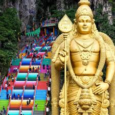

Welcome to My Hometown
Kuala Lumpur, also known as KL, is my hometown and the capital city of Malaysia. It is a lively city filled with skyscrapers, shopping malls, cultural landmarks, delicious food and friendly people. Kuala Lumpur is special because it combines Malay, Chinese, Indian and other cultures in one colourful city.
Explore Attractions
Modern City
KL is famous for its modern skyline, especially the Petronas Twin Towers and KL Tower.

Cultural Heritage
The city is surrounded by many cultural and religious attractions such as Batu Caves.

Delicious Food
Kuala Lumpur is a food paradise with famous dishes such as nasi lemak and satay.